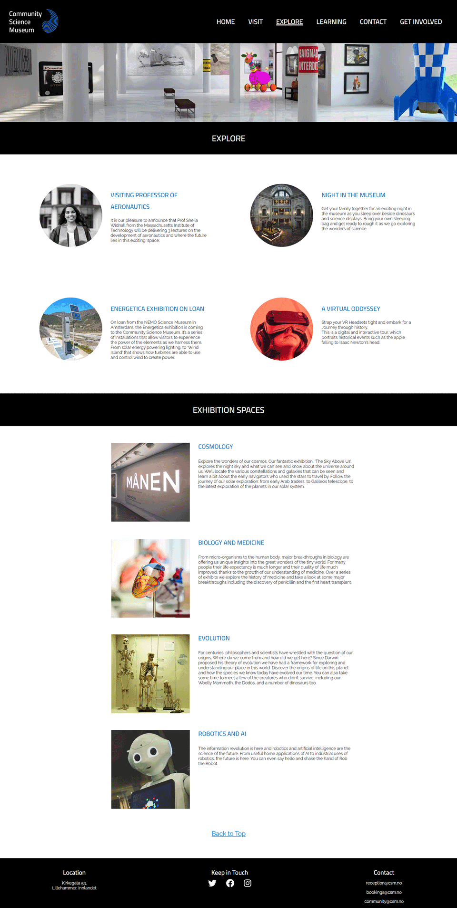

Community Science Museum
This is the project we were tasked with for the first semester at Noroff. Community Science Museum is an interactive science museum, located in Lillehammer, Norway.
GitHub Repo Live SiteI am studying Front-end web development @ Noroff School of Technology and Digital Media.
You can reach out to me on Twitter, LinkedIn, or martin2resen@gmail.com.
Feel free to take a look at my portfolio below.
This is the project we were tasked with for the first semester at Noroff. Community Science Museum is an interactive science museum, located in Lillehammer, Norway.
GitHub Repo Live Site